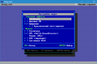

 Настройки звука
Раздел настроек звука позволяет осуществить настройку звука и музыки. Предусмотрен выбор различных форматов звучания и воспроизведения.
Звуковые эффекты
- Отключены. не воспроизводить звуки.
- Динамик ПК. Звуковая эмуляция встроенного динамика PC Speaker.
- Цифровые. Воспроизведение цифровых звуков.
- Произвольный питч-шифтинг. Звуки будут воспроизводиться с разной тональностью, аналогично ранним версиям Doom 1 (до выхода версии 1.4).
- Моно режим. Активация режима эмуляции моно звуков. Может быть полезен тем, кто играет в одном наушнике или же просто в случае каких-либо проблем с аудио аппаратурой.
Музыка
- Отключена. Не воспроизводить музыку.
- OPL (Adlib/Soundblaster). Воспроизводить музыку в формате OPL, аналогично оригинальному звучанию версии игры для DOS. Предусмотрено два режима:
- OPL2: звучание в формате моно
- OPL3: звучание в формате стерео
- GUS (эмуляция) - звучание в формате Gravis Ultrasound. Требует наличия звуковых банков. В случае установленного Doom III BFG Edition, папка со звуковыми банками будет обнаружена автоматически.
- Системное MIDI - использовать системное MIDI-устройство. Дополнительно, но не обязательно предусмотрено использование конфигурационного файла от программы Timidity.
|
{kind=link}